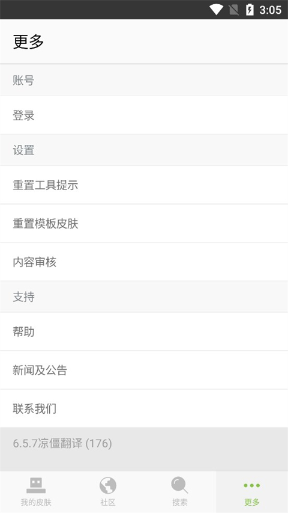

Skinseed 速查：Minecraft 皮肤自制工具 9 问 9 答
Skinseed 到底免费吗、AI 生成靠谱不、皮肤导入不上身怎么办——整理九个玩家最常问的问题，直接给结论。
整理一篇关于 Skinseed 的快问快答。这款应用在 Minecraft 皮肤圈已经火了好几年，但每次有人问起还是会冒出一堆重复问题：免费吗？AI 好用吗？导入游戏没反应怎么办？直接开问。
它到底是什么
Skinseed 是一款移动端 Minecraft 皮肤编辑器，从画皮肤、搜皮肤到导出进游戏一条龙。它的官网上能看到产品全貌。底层逻辑很简单：把 Minecraft 那套像素皮肤格式做成可视化编辑器，加上社区皮肤库和 AI 生成，让不会画像素的玩家也能用上自己的皮肤。目前 App Store 和各大安卓市场都能搜到，社区里已经有几十万张用户分享的皮肤。
谁需要装
三类人最适合：想换个个性化皮肤又不想挨个找现成资源的普通玩家、想从零画一套皮肤但被像素画劝退的创作者、会画但嫌传统编辑器麻烦的老炮。第一类直接去社区搜就行，第二类靠 AI 生成打底稿再手修，第三类冲它的移动端便捷性和社区生态。如果你从来不换皮肤，完全没必要装。
安装和上手难不难
安装包从Skinseed下载拿就行，装完直接打开就能用，没有注册墙也没有引导教程。首页四个入口：社区搜皮肤、新建空白皮肤、AI 生成、导入本地皮肤。第一次上手推荐走这条路径：去社区搜一个喜欢的皮肤 → 导入编辑器 → 改两笔颜色 → 导出上游戏，全程不到五分钟。编辑器本身的学习曲线很平——像素画的操作逻辑就是点格子填颜色，取色器、填充、镜像这些工具摆得很直观。

核心功能要花钱吗
不用。画皮肤、搜社区皮肤、导出进游戏这些主线功能全免费。应用靠广告和可选内购回血，商店页面标注的是「免费 · App 内购买」。付费项主要三件事：¥8 一次性去广告、¥38 左右的月订阅（高频创作者才用得上）、以及社区头像装饰框这种纯装饰内容。普通玩家一分钱不花能把整条流程用满，介意广告就花八块买断去广告。
AI 生成皮肤靠谱吗
结论：能出底稿，直接上身不行，但打底稿够用。AI Skin 入口在底部导航，2025 年秋季大版本上线的新功能。提示词对结构化英文短语响应最好——比如「KPop star, girl idol character, purple bob hair, yellow and red outfit」这种四个槽位的句式比长句效果好，颜色信息给足、一次别堆太多元素。生成后必须进编辑器细修：重描五官、用取色器归整杂色、补明暗层和配饰——具体工具用法可以查Skinseed文档里的编辑器指南。直接导出大概率会糊或细节错位，修一遍之后的成品率就高了。
皮肤导入了游戏却没生效
按这个顺序排查，九成情况能定位：
- 确认最后那一下点没点——基岩版导入皮肤后必须点「确认/启用」，历史版本这个按钮很不显眼，「图片选了但没确认」是最高频原因。
- 查导出的图片——相册里看皮肤图是不是黑底或白底（透明通道丢了），是不是模糊压缩图，异常就重导。
- 查模型匹配——粗臂皮肤配了细臂角色（或反过来）花纹必然错位，回游戏角色设置核对模型类型。
- 查游戏版本——版本太老可能不读第二层（外套帽子消失），历史上还有过细臂腿部翻转的渲染 bug，升级游戏基本能解决。
- 查服务器规则——多人服务器可能用自己的皮肤体系覆盖本地皮肤，你自己界面看是新皮肤但服务器里显示服务器皮肤。
- 重启大法——游戏、启动器、账号全重启一次，缓存类问题基本被这步覆盖。
排查无果的话，回到应用重新导出一遍再全流程重走，幂等操作不丢数据。
社区发布为什么要等审核
Skinseed 的社区现在每张发布的皮肤都要过人工审核。开发团队之前试过自动化审核但最终选择了人工为主——高峰期曾出现过最长半天的等待，现在日常几分钟就能过。必拒的四类内容：搬运冒充别人作品、色情暗示或血腥恐怖、广告引流、未经授权复刻现实品牌或角色。魔改和致敬是允许的，边界在于有没有可辨识的二次创作。被拒了可以自查踩线点修改后重发，或者走反馈渠道申诉，别短时间内反复重发同一作品。
和同类工具比怎么样
移动端同类型工具里 Skinseed 的生态最完整——社区皮肤库、AI 生成、编辑器、导出这几块全打通了。纯 PC 端的玩家可能更习惯 desktop 版的编辑器，但 Skinseed 胜在随时随地掏出来改两笔、社区里刷灵感。AI 生成这块它是走在前面的，其他同定位工具要么没 AI，要么 AI 效果差一截。唯一的硬伤是订阅制的定价对低频用户偏贵，不过去广告是买断的，这一点还算良心。
值得装吗
如果你玩 Minecraft 且至少偶尔换皮肤——值得。免费就能走通全流程，AI 生成帮不会画像素的玩家也能做出像样的皮肤，社区生态活跃，移动端便捷性是 PC 工具没法比的。不玩 Minecraft 或者从不换皮肤的可以跳过。
顺手说一句：Skinseed 皮肤库和 AI 生成的玩法资料，在 GitHub、Gitee、GitCode 三个仓库里都能找到对应的整理文档，不同网络环境按需取用就行。